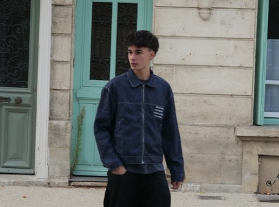
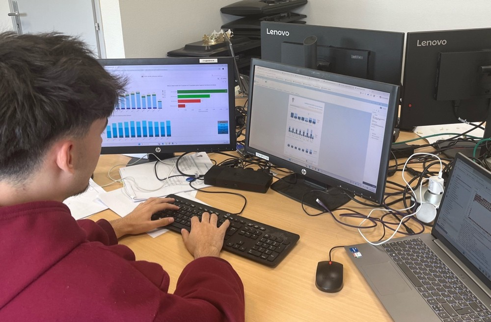

Découvrez mon Univers
Parcours & Études
Bonjour, je m'appelle Joackim ROCA-LABUTTIE et je suis actuellement étudiant en deuxième année de Sciences des Données à l'IUT de Niort, au sein de l'Université de Poitiers. Mon parcours a débuté avec un Baccalauréat Général où j'avais choisi les options Mathématiques et Physique-chimie. Depuis toujours, les sciences ont été mes matières de prédilection, me conduisant naturellement vers la filière des sciences des données, qui me passionne aujourd'hui.

Profil
Dans ma vie quotidienne, je suis quelqu'un de réservé, mais une fois que je connais les personnes avec qui je travaille, je n'ai aucun problème à m'intégrer et à collaborer efficacement.
Arsenal Technique
Les outils et technologies qui m'accompagnent au quotidien pour transformer la donnée en information.

La Genèse de ma Passion
Mon intérêt pour les sciences des données s'est éveillé lors d'un forum des métiers à Niort où l'on m'a présenté ce domaine fascinant et riche en possibilités. En approfondissant le sujet, j'ai rapidement compris que c'était précisément le domaine vers lequel je voulais orienter ma carrière. Cette passion s'est renforcée au fil de mes études, notamment en étudiant les données dans le sport au sein d'un projet personnel, utilisant des bases de données et créant des graphiques pour aider les supporters.

Équilibre & Sport
Mes passions incluent les sports de raquette, comme le tennis que je pratique depuis 12 ans. Je vais également à la salle de sport deux fois par semaine pour maintenir un équilibre sain.
Expérience Professionnelle
Stage de 10 semaines au sein du SDIS79. Mise en œuvre des compétences acquises durant mes 2 années en BUT Sciences des Données au sein d'un environnement professionnel complexe.
Family Fun Park (Parc de trampoline et jeux). Renforcement du goût de l'effort, du travail en équipe et de la persévérance.
Permanences club de tennis (organisation et gestion des activités sportives régionales).
Visions d'Avenir
À terme, j'aspire à poursuivre mes études avec un master dans le domaine de la statistique. Je suis convaincu que ce secteur est en plein essor et qu'il est essentiel de comprendre en profondeur les méthodes analytiques pour transformer les données en décisions éclairées.